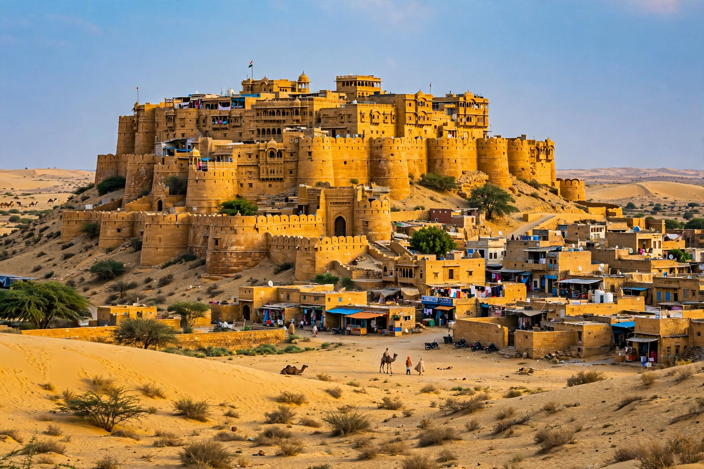

Wikipedia — the free encyclopedia

| Country | India |
| State | Rajasthan |
| Founded | 1156 AD by Rawal Jaisal |
| Nickname | The Golden City |
Jaisalmer is a city in the western Indian state of Rajasthan, in the heart of the Thar Desert near the border with Pakistan. It is called the Golden City for its yellow sandstone architecture, above all Jaisalmer Fort (Sonar Quila) — one of the world's few remaining "living forts", with about a quarter of the old city's population still residing within its walls.
Founded in 1156 by the Bhati Rajput ruler Rawal Jaisal, Jaisalmer grew rich taxing camel caravans on the trade routes between India and Central Asia, before maritime trade eclipsed the desert routes. Its Jain temples (12th–15th centuries) and merchant havelis — Patwon Ki Haveli, Salim Singh Ki Haveli — are famed for carved sandstone. The fort's drainage ("ghut nali") and water stress are modern conservation concerns.